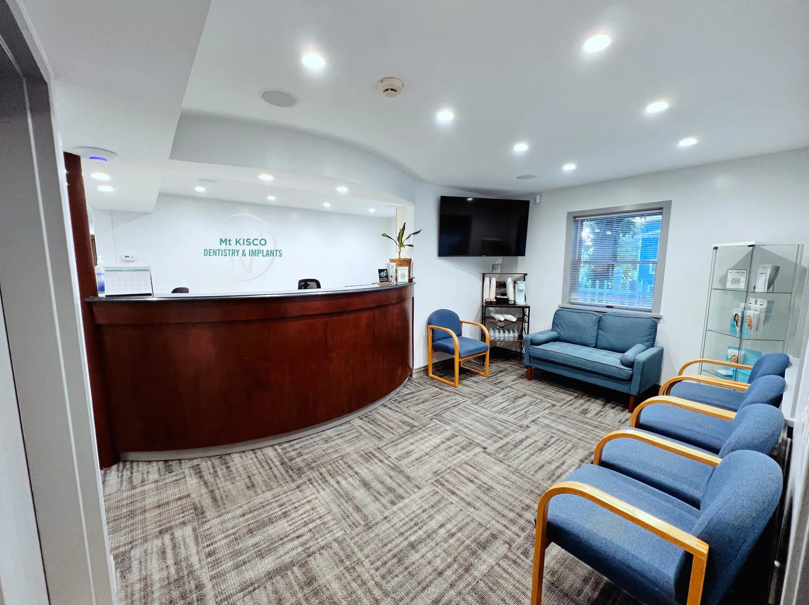
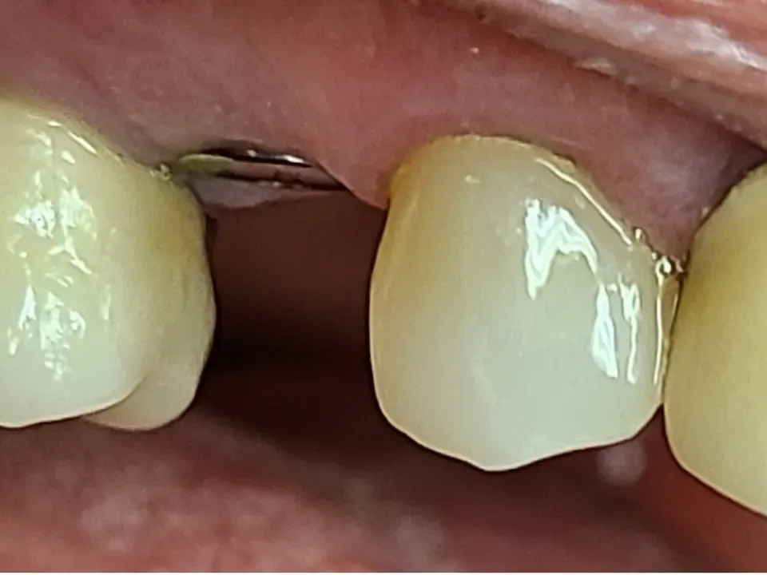
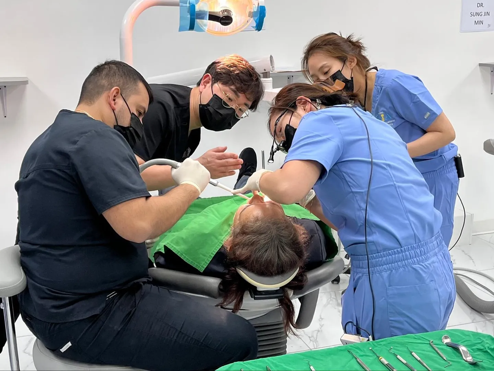

Mount Kisco, NY · Kent, CT · Stamford, CT
Dentistry & Implants
Dentistry Built on Trust. Implants Designed to Last.

New York
Mount Kisco
39 Smith Ave, Rear LL
Before and after
 After
After

BeforeAfterIn pain today
Same-day visits for patients in pain.
Call the office closest to you. Hablamos español.
Patient stories
Veneers, Mount Kisco
Watch the videos
Mount Kisco hours
Open this week.
- Mon
- 9:00 am to 6:00 pm
- Tue
- 8:00 am to 6:00 pm
- Wed
- Closed
- Thu
- 10:00 am to 6:00 pm
- Fri
- 9:30 am to 3:00 pm, every other week
Three offices
Call us.
Services

Your surgeon
Dr. GiTae Kwon, DDS MSc
Meet Dr. Kwon
Implant dentistry
A missing tooth, replaced by a surgeon who teaches the technique.
Dental implants, full-arch implants and same-day implants, planned and placed in house.

Teaching
Live surgery courses

Our team
Dr. Kwon and Dr. Park
Meet the team
Smile makeovers
Veneers, whitening and crowns.

Gallery
Real results

Connecticut
Stamford
800 E Main St. Open Saturdays.

Connecticut
Kent
70 Maple St
Ready when you are